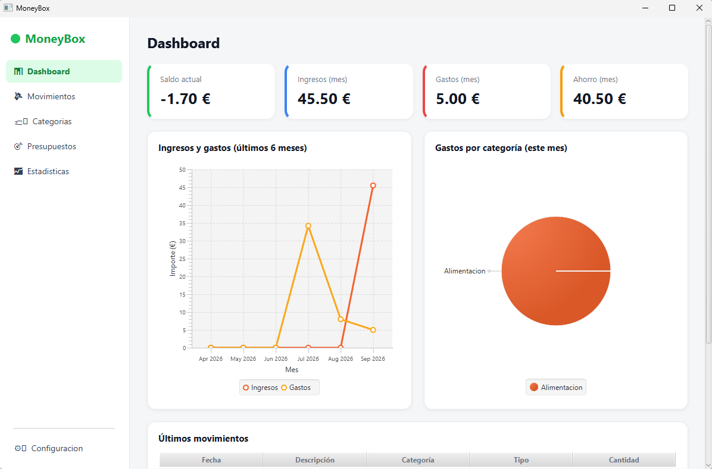
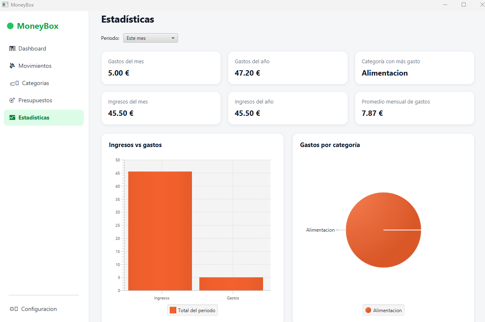
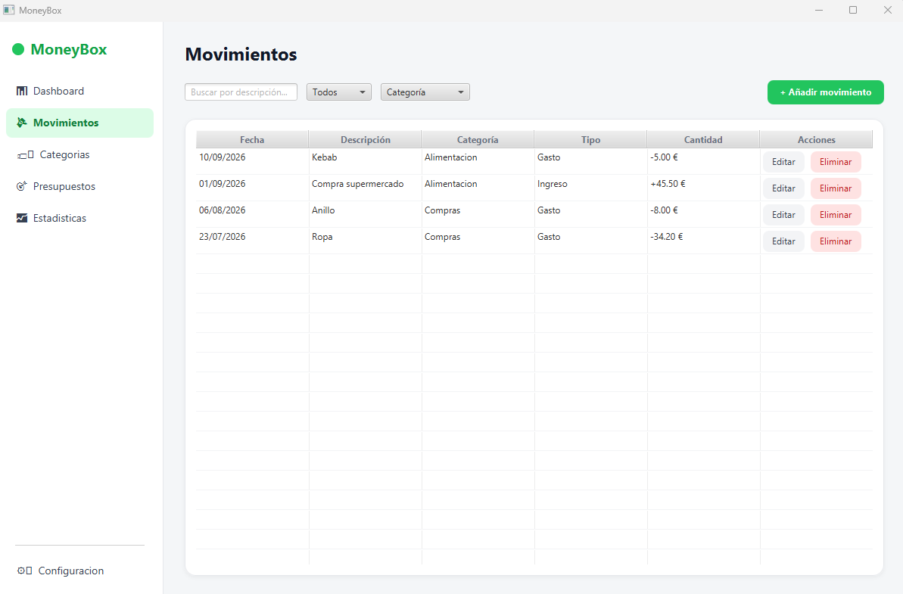

Ingresos y gastos
Registra y controla todos tus movimientos financieros.
Una aplicación de escritorio sencilla y visual para gestionar tus ingresos, gastos y movimientos financieros desde tu propio ordenador.
↓Windows 10 / 11 · No requiere instalar Java
Registra y controla todos tus movimientos financieros.
Organiza tus movimientos de forma sencilla.
Analiza visualmente cómo gestionas tu dinero.
Controla tus límites y mantén tus gastos bajo control.
Echa un vistazo a MoneyBox antes de descargarlo.

Consulta rápidamente el estado de tus finanzas desde una única pantalla.

Analiza tus ingresos y gastos mediante información visual.

Gestiona y consulta todos tus movimientos financieros fácilmente.
MoneyBox está desarrollado con Java y JavaFX, utilizando SQLite para almacenar los datos localmente. Tus finanzas permanecen en tu ordenador y no necesitas depender de servicios externos.